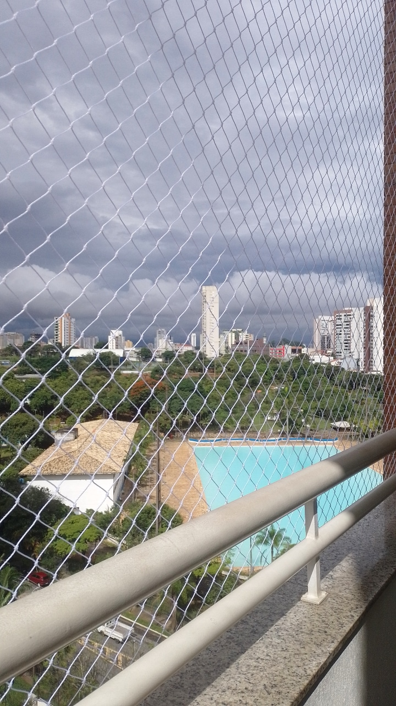
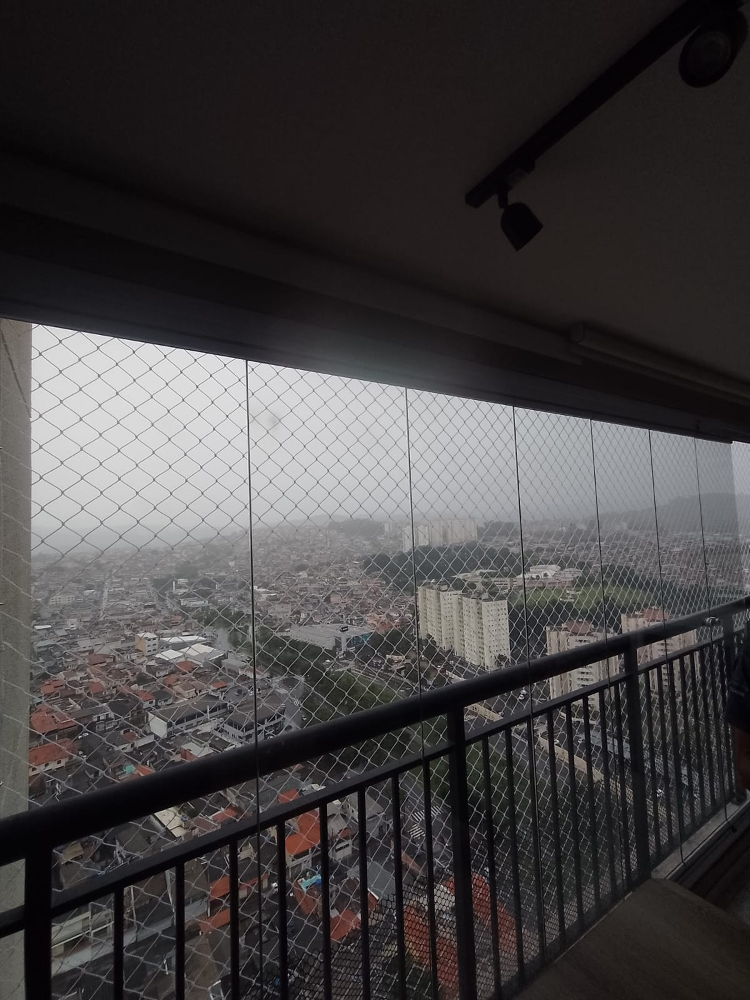
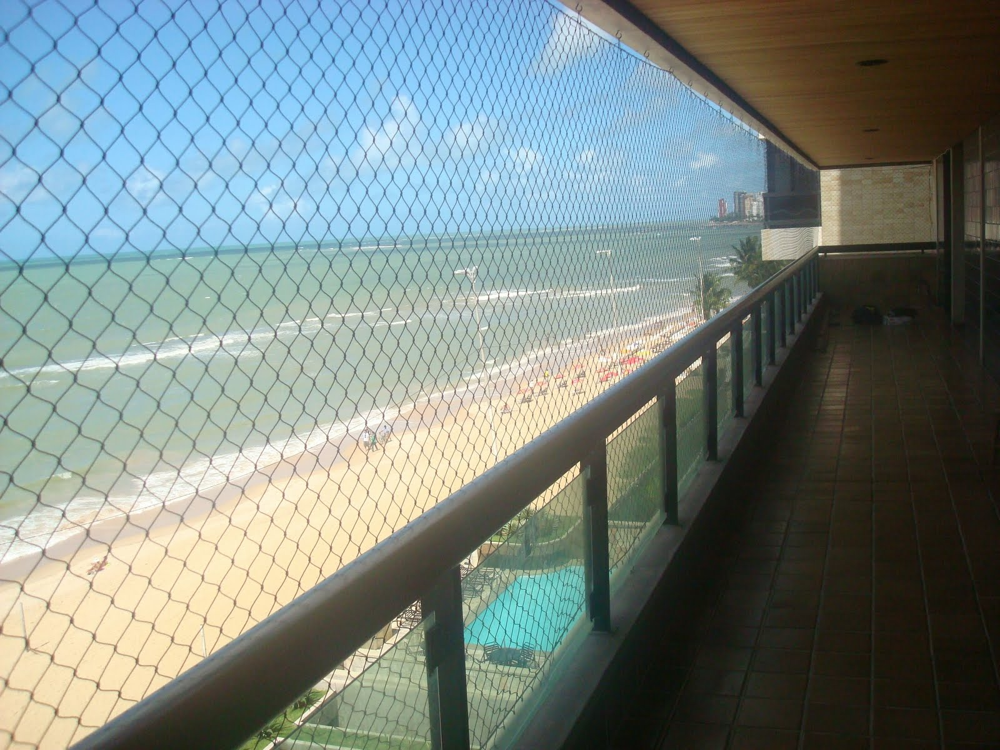
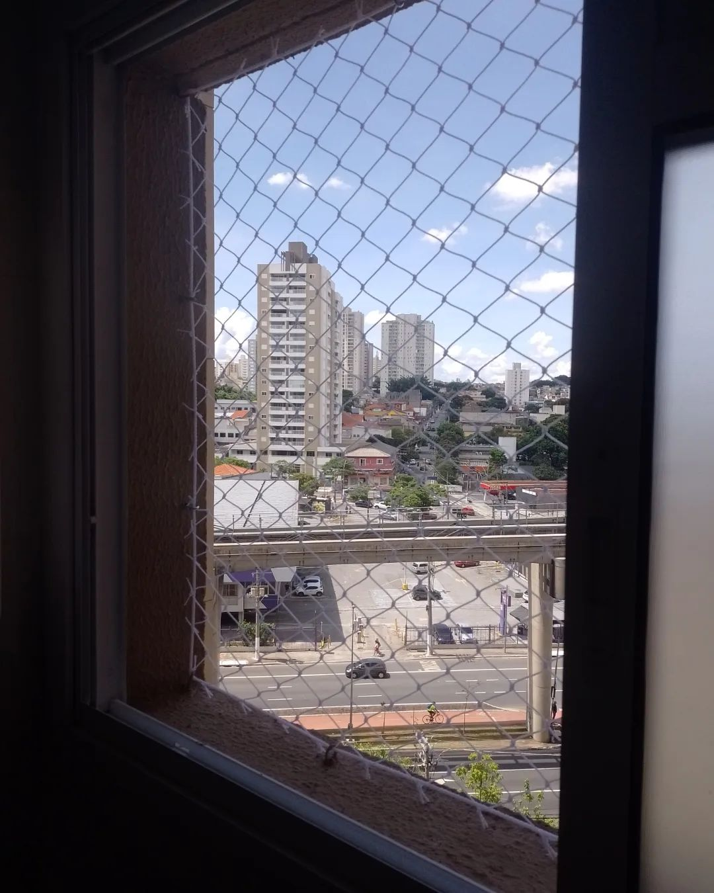
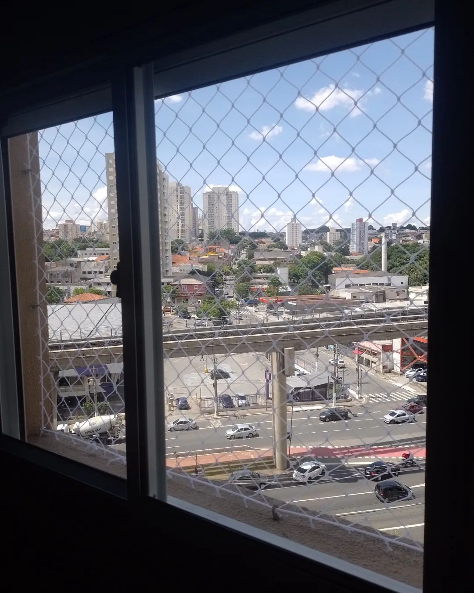
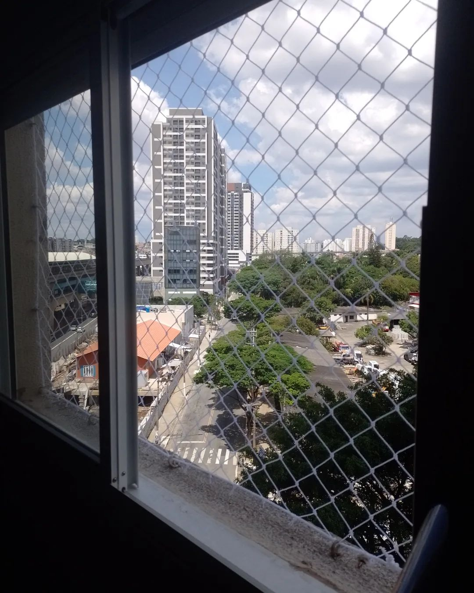
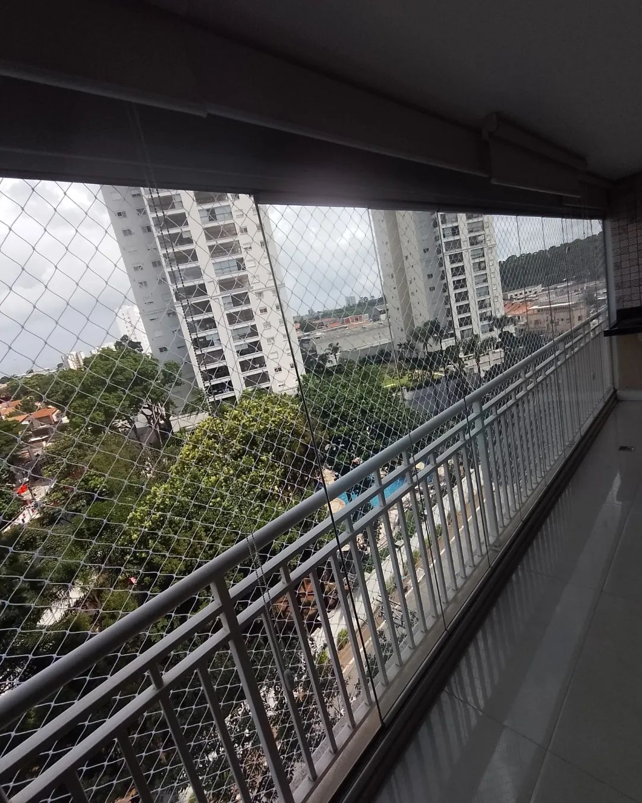
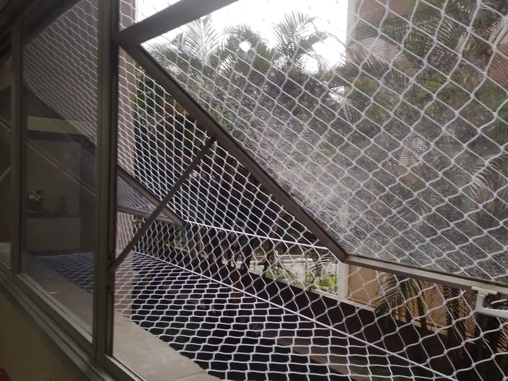
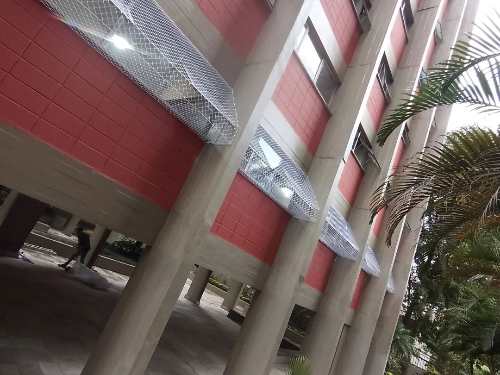
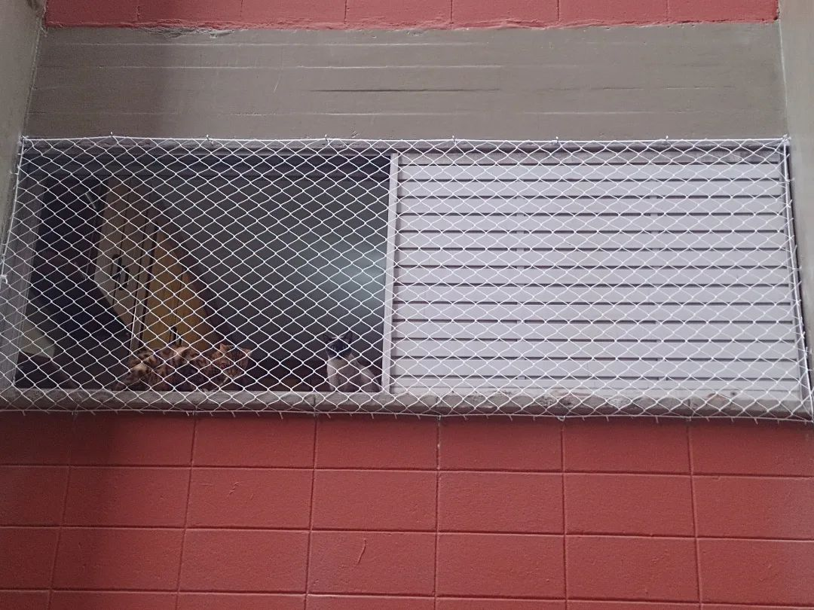

CRR redes protegendo lares, protegendo vidas!
Redes de proteção são estruturas feitas de materiais resistentes, como nylon ou polietileno, que são instaladas em janelas, sacadas, varandas e outras aberturas em residências e prédios para garantir a segurança de crianças, animais de estimação e até mesmo adultos, evitando quedas e acidentes. Elas oferecem uma barreira eficaz contra quedas, além de proteger contra a entrada de insetos e pequenos objetos.
Solicite OrçamentoSolicite agora seu orçamento via WhatsApp sem compromisso
Para solicitar orçamento basta clickar no botão acima"
- Instalação de Redes de Proteção
- Troca e Manutenção
- Serviço de proteção à criança
- Telas mosqueteira
- Redes para piscinas
- Atendimento 24 horas
- Estrura metálica
Confira nossos trabalhos
      Ficou alguma dúvida?
Atendemos em toda região de são paulo, interior e baixada.
1 ano de garantia.
Uma rede de proteção em apartamentos é uma medida de segurança importante, especialmente em locais onde há crianças, idosos, animais de estimação ou até mesmo para evitar acidentes envolvendo objetos que possam cair das janelas.
Têm durabilidade de 4 a 5 anos, dependendo da qualidade da tela. É importante que você repasse esse alerta aos seus amigos, familiares e colegas. Dessa forma, os riscos diminuem e todos podem se conscientizar da importância da troca.